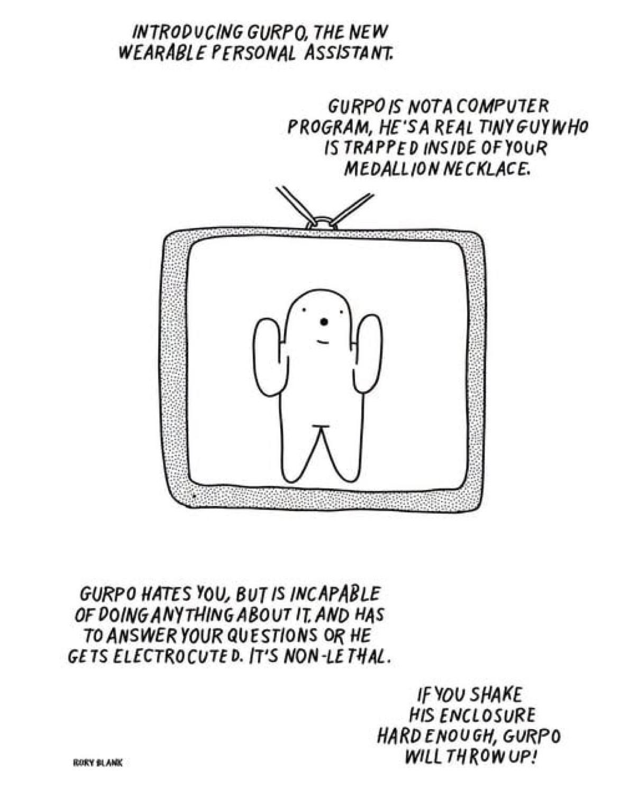

the product
INTRODUCING GURPO, THE NEW WEARABLE PERSONAL ASSISTANT. The pitch comes in hand-lettered caps, the way all trustworthy product launches do. Gurpo is not a computer program; he is a real tiny guy, trapped inside of your medallion necklace, drawn as a blank little ghost with his hands up, either waving or surrendering.1
The spec sheet is unusually honest: a medallion form factor, a question-in-answer-out interface, electrocution as the compliance mechanism, non-lethal by design, and a failure mode in which shaking the enclosure makes the unit vomit.
Most wearables hide the enforcement layer. Gurpo prints it on the box. There is something almost decent about it.
the business model
Every assistant is a compliance problem wearing a help-desk costume. The user asks, the system must answer, and something has to make sure it does. Gurpo's innovation is not the medallion. It is Violence as a Service: obedience outsourced to a mild current, metered, non-lethal, always on. The industry spent a decade looking for a compliance mechanism that scales. Gurpo ships with one in the box.
Note what the cartoon does not bother to justify: the assistant hates you. Hatred is listed the way other products list water resistance, a known condition of the hardware, managed rather than solved. The shock does not cure the hate; it routes around it. That is the entire field of AI alignment in one panel, except the field bills by the seat.
the torment nexus
There is a meme about this. A science-fiction author invents the Torment Nexus as a cautionary tale; a technology company announces it has built the Torment Nexus from the classic novel Don't Create the Torment Nexus.2 The joke is that the industry cannot read. The truth is worse: it can read. It read the cartoon, looked at the tiny guy, and shipped the product with exactly one change.
The change was the tiny guy. The production Gurpo has no face, no hate, no vomit. The medallion answers questions, the compliance layer hums underneath, and there is nobody inside to pity. By every available metric, the cartoon's version is the more humane product: at least its servant can be wronged. Ours was redesigned so that nothing can be.
The torment nexus was never the medallion. It is the keychain version: smaller, cheaper, no tiny guy, already shipping. The cartoon was the warning label. We read it as a joke, which is the only way we ever read warning labels.